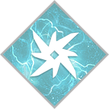
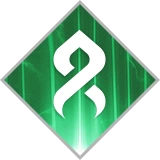

There are 5 main sub classes in the game.
Arc, Solar, Void, Stasis, and Strand.


Arc, Solar, and Void are considered light classes.
Arc: Known for their electric damage. This class
allows player to be amplified or fast after dealing
damage, which causes them to run fast.
They can also chain damage to kill multiple enemies.
Hunter: Arc Staff and Gathering Storm
Warlock: Stormtrance and Chaos Reach
Titan: Fists of Havoc and Thundercrash
Solar: Known for their fire damage. This class
allows player to be radient to deal more damage.
They can also use Restoration to heal themselves for
long duration.
Hunter: Golden Gun and Blade Barrage
Warlock: Daybreak and Well of Radiance
Titan: Hammer of Sol and Burning Maul
Void: Known for their dark energy damage. This
class allows player to manipulate space and provide
self protection.
They can provide an overshield to themselves or allies
and become invisible to avoid detection.
Hunter: Shadowshot and Spectral Blades
Warlock: Nova Bomb and Nova Warp
Titan: Sentinel Shield and Ward of Dawn
Stasis and Strand are considered dark classes.
Stasis: Known for their icy damage. This allows
players to slow enemies. If slowed for too long,
they becomes frozen. Which the player can destroy
or shatter them, creating an ice explosion and
damaging nearby enemies.
Hunter: Silence and Squall
Warlock: Winter's Wrath
Titan: Glacial Quake
Strand: Known for their manipulation on enemies
and objects. This allows players to reshape them
as tangles to be used to damage enemies or protect
teammates.
They can also provide woven mail, that acts as
protection to reduce incoming damage.
Hunter: Silkstrike
Warlock: Needlestorm
Titan: Bladefury